고객사 구축은 IT 기획·PM 이력 기준, 대표 프로젝트 4개는 아래 카드, 검수 173개는 비영리 협회 홈페이지 한 건 기준입니다.
PHOTO
왜 기획·PM인가
교육 현장에서 11년, 부원장까지 일하며 프로그램을 쓸 때마다 “조금 더 효율적인 방법은 없을까?”를 물었습니다.
답을 직접 찾으려 프론트엔드·백엔드 과정을 수료하고 SQLD·ADsP를 취득했고, 2025년 7월부터 웹서비스 구축 PM으로 일하고 있습니다.
정해진 방식은 먼저 그대로 해 보고, 같은 수작업과 실수가 반복되면 겪은 문제를 근거로 구조를 바꾸자고 제안합니다.
지금은 Claude Code 같은 AI 도구로 직접 만들어 확인하고, 스테이징 리허설·보안 점검·실제 화면 확인을 거쳐 운영에 반영합니다.
“불편을 현장에서 겪어 본 사람이, 해결책을 직접 만들고 검증해 실서비스까지 책임집니다.”
대표 프로젝트
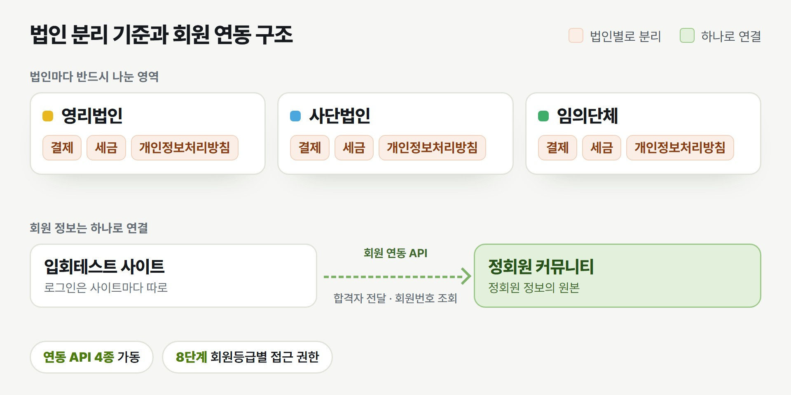
비영리 회원단체 통합 홈페이지 리뉴얼 - 구조 설계 · 회원 연동
기획 PM · 개발 주체 3곳(사내·외부 개발사·기존 쇼핑몰)과 고객사 위원회 사이 연동 조율 · 8단계 회원등급 권한 설계 · 연동 API 4종 가동 · 추가 발주로 온라인 테스트 오픈(2026.03)
기획 · PM · 서비스 구조 설계 · 연동 설계 · 2025.08 - 현재
문제
세 법인(영리법인·사단법인·임의단체)이 15~20년 된 그누보드 사이트 하나를 함께 쓰고 있어, 어느 한 곳이 보안 패치나 결제 연동을 하려 해도 세법 구분·개인정보처리방침이 서로 엉켜 손댈 수 없었습니다.
결과
회원 연동 API 4종이 가동됐고, 온라인 두뇌 테스트 해설노트 결제는 실제 결제로 운영 중입니다.
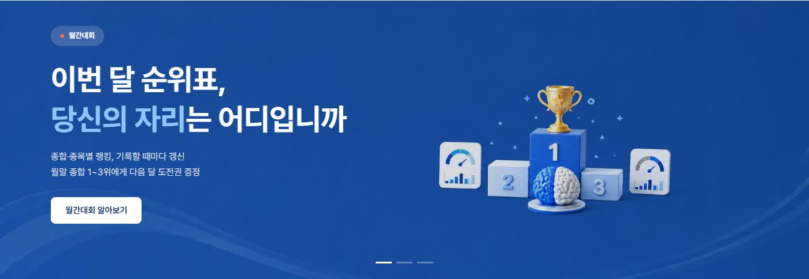
두뇌훈련 서비스 (라이선스 사업, 자사 운영)
가맹심사부터 실결제 운영까지 직접 · 2026.09.10 오픈, 결제 중단 없이 운영 중 · 결제 보안 강화 · 배포 자동화
PM · 기획 · AI 활용 개발 · 결제(PG) 연동 · 배포 방식 전환 · 2026.07 - 현재
문제
무료 훈련으로 들어온 사용자가 월간대회 도전권을 사려 해도 모의 결제 상태라 결제할 수 없었습니다.
결과
가맹심사를 통과해 실결제로 운영하고 있습니다.
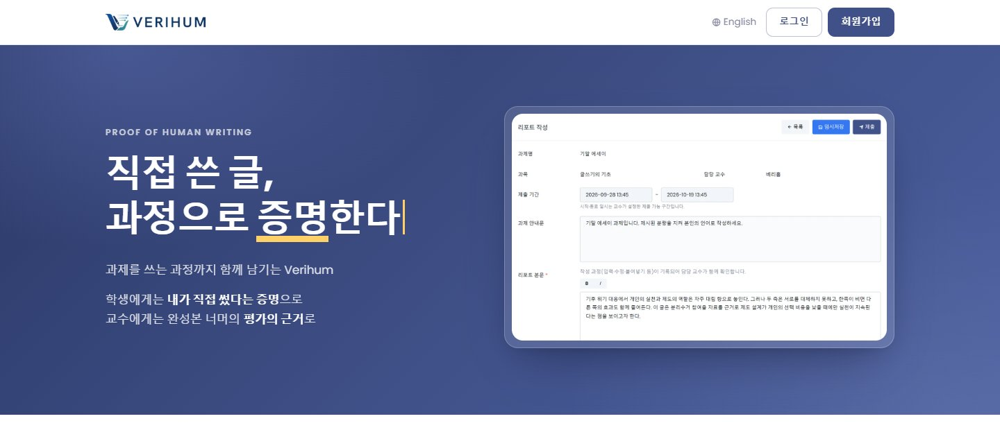
Verihum(베리흄) - 글쓰기 과정 분석 교육 SaaS (자사 서비스)
기획·판정 로직 설계 직접 · 초기 개발만 협업, 기능 고도화·배포·운영 담당 · 대학 수업 실사용 중 · 중간고사 58명 제출, 오류 0
기획 · 판정 로직 설계 · 개발(초기 공동) · 배포·운영 · 2026.07 - 현재 · verihum.kr
문제
생성형 AI가 퍼지면서 완성된 글만 보고는 학생이 직접 썼는지 판단하기 어려워졌습니다.
결과
대학 수업에서 실제 과제 작성·제출·채점에 쓰이고 있습니다.
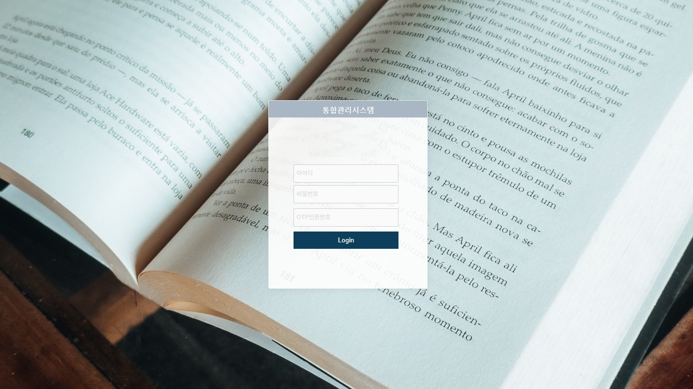
학원 통합관리시스템 (4개 지점)
기획 단독 · 4개 지점 수강생 4천여 명 · 2024.05 런칭, 기획 이관 후에도 학원에서 계속 사용 중
계약직 기획자(디딤유) · 2023.12 - 2024.04 · 첫 단독 기획 프로젝트
문제
4개 지점의 관리부 직원과 교사는 지점·과정마다 회원·입학·수업 정보를 따로 관리해, 입학 신청부터 등록까지 진행 상황을 따라가기 어려웠습니다.
결과
2024년 5월 서비스가 런칭돼 4개 지점, 수강생 4천여 명의 관리 업무에 지금도 쓰이고 있습니다.
비영리 회원단체 통합 홈페이지 리뉴얼 - 구조 설계 · 회원 연동
기획 · PM · 서비스 구조 설계 · 연동 설계 · 2025.08 - 현재
요약
3개 법인을 도메인 그룹으로 나누고 8단계 회원등급별 접근 권한을 정했습니다. 사이트마다 따로 로그인하되 정회원 정보의 원본은 정회원 커뮤니티 하나로 두는 연동 구조를 문서로 정리했고, 이 기준으로 입회테스트 사이트·온라인 두뇌 테스트·응시자 기념품 구매를 기획·PM했습니다.
역할
프로젝트 인원 : 입회테스트 사이트는 사내 개발, 정회원 커뮤니티는 사내 디자인 후 외부 개발사 개발, 응시자 기념품 구매는 기존 쇼핑몰(별도 개발자) · 고객사 IT위원회 위원장(구조·연동 결정), 사무국 간사(입회테스트 운영)
나의 역할 : 구조 정리·기획·PM, 입회테스트 사이트 기획·PM, 정회원 커뮤니티 기획, 외부 개발사 API 문서 분석 후 입회테스트 사이트·기존 쇼핑몰 연동 방안 정리, 사내 개발자·쇼핑몰 개발자 작업 지시와 확인, 온라인 두뇌 테스트 결제 연동 API 설계
문제
세 법인(영리법인·사단법인·임의단체)이 15~20년 된 그누보드 사이트 하나를 함께 쓰고 있어, 어느 한 곳이 보안 패치나 결제 연동을 하려 해도 세법 구분·개인정보처리방침이 서로 엉켜 손댈 수 없었습니다.
분석
법인별 사업자 유형에 따라 결제·세금·개인정보처리방침은 반드시 분리할 영역으로, 회원 인증은 묶을 수 있는 영역으로 나눴습니다. 미로그인부터 만료·제명 회원까지 8단계 등급별 접근 권한을 표로 정리했습니다.
기획
도메인을 세 그룹으로 정리하고, 사이트마다 개별 로그인을 유지하되 정회원 정보는 정회원 커뮤니티를 원본으로 두는 연동 구조를 문서로 만들었습니다.
실행
입회테스트 사이트와 기념품 구매를 기획·검수했습니다. 회원 연동은 1차 범위를 "합격 - 정회원" 순서 흐름으로 좁혀 개발 가이드를 냈고, 온라인 두뇌 테스트 해설노트는 다른 서비스가 결제를 대행하도록 결제 연동 API를 설계했습니다. 정회원 커뮤니티를 맡은 외부 개발사가 연동 API 문서를 넘기면, 이를 분석해 입회테스트 사이트와 기존 쇼핑몰이 각각 어떻게 붙을지 정리하고 사내 개발자와 쇼핑몰 개발자에게 작업을 지시한 뒤 결과를 확인했습니다. 행사 신청 기준을 회원 상태별 횟수로 정하고 광고 추적(GTM·UTM)을 넣었습니다.
결과
회원 연동 API 4종이 가동됐고, 온라인 두뇌 테스트 해설노트 결제는 실제 결제로 운영 중입니다.
배운 점
법인·등급·도메인이 얽힌 조직에서는 화면보다 "누가 무엇에 접근하는가"를 먼저 확정해야 했습니다. 연동은 정해진 흐름부터 열고, 정해지지 않은 흐름은 미결 목록으로 따로 관리하는 편이 일정을 지켰습니다.
입회테스트 합격자가 정회원이 되기까지 (연동 1차 범위)
합격입회테스트 사이트에서 합격 처리
합격자 전달정회원 커뮤니티에 합격자 등록(관리자 선택 전송)
커뮤니티 가입합격자만 가입, 첫 로그인 때 본인인증
회비 납부입회비·연회비 납부 후 정회원 상태
회원번호 확정테스트 사이트가 확정된 회원번호를 조회
역순 가입 이미 커뮤니티 회원인 사람이 나중에 테스트 사이트에 가입하는 흐름은 1차에서 빼고 미결 문서로 관리
회원번호 직접 입력 고객사 위원회 판단으로 배제
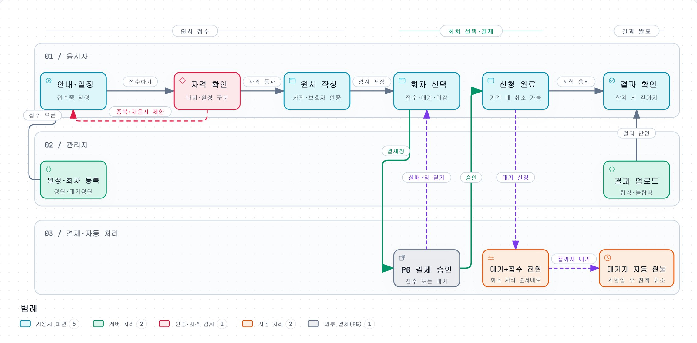
입회테스트 접수 사이트 사용자 흐름도 · 누르면 크게 볼 수 있습니다
핵심 의사결정
법인 분리 기준을 결제·세금·개인정보처리방침으로 정하고, 회원 인증만 공통으로 남겼습니다
근거
법인마다 사업자 유형과 결제 계약이 달라 이 세 가지는 섞이면 법적 문제가 됩니다. 반면 회원 인증까지 완전히 나누면 사용자가 불편해집니다.
결과
도메인 세 그룹과 등급별 권한표가 이후 사이트 기획의 기준이 됐습니다.
회원 연동 1차 범위를 "합격 - 정회원" 순서 흐름으로 좁혔습니다
근거
역순 가입 흐름은 기존 회원 DB 이관 방식이 고객사 위원회·외부 개발사와 정해지지 않은 상태였습니다. 모든 흐름이 정해질 때까지 기다리면 착수가 늦어져, 확정된 흐름만 착수하고 나머지는 확인 요청 문서로 분리했습니다.
결과
연동 API 4종이 먼저 가동됐습니다.
온라인 두뇌 테스트 결제를 상대 사이트에 넣지 않고 "새 탭 결제 페이지 + 결과 통보" 방식으로 바꿨습니다
근거
상대 개발팀이 결제 모듈과 승인 로직을 직접 붙이는 부담을 줄이려 했습니다. 주문번호가 주소에 드러나던 방식도 일회용 토큰으로 바꾸고, 상대 쪽 변경은 필드 하나 추가 수준으로 맞췄습니다.
결과
상대 쪽 구현은 결과 통보 수신 위주로 줄었고, 실제 결제로 운영 중입니다.
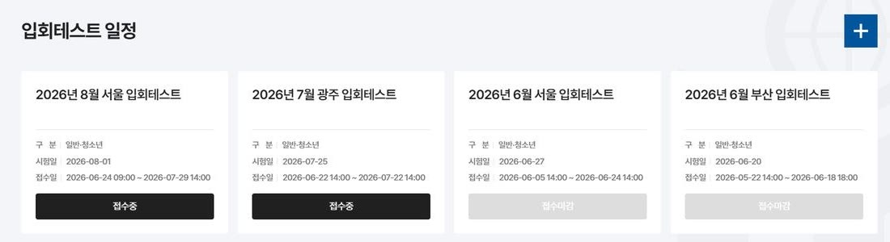
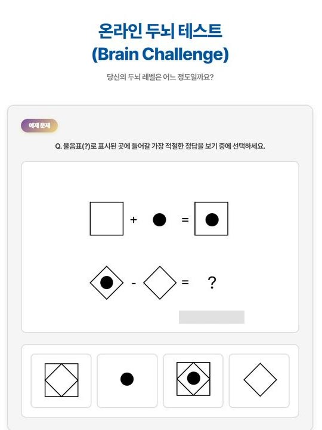
두뇌훈련 서비스 (라이선스 사업, 자사 운영)
PM · 기획 · AI 활용 개발 · 결제(PG) 연동 · 배포 방식 전환 · 2026.07 - 현재
요약
두뇌훈련 게임과 월간대회를 운영하는 라이선스 사업(자사 운영)입니다. 무료 진단·맞춤훈련부터 유료 월간대회까지 사용자 흐름 전체를 기획했고, 결제 연동, 결제 보안 보완, 도전권 정책과 차감 로직, 배포 방식 전환까지 직접 구현해 실제 운영 중입니다.
역할
프로젝트 인원 : PM 1인(본인), 연동 상대 사이트 개발팀·사내 지원 인력(가맹 서류) 협업
나의 역할과 기여도 : 기획·AI 활용 개발·결제 연동·QA·배포·운영 (기여도 100%)
문제
무료 훈련으로 들어온 사용자가 월간대회 도전권을 사려 해도 모의 결제 상태라 결제할 수 없었습니다. 가맹심사에서는 사업자정보와 비회원 결제 미비를 지적받았고, 도전권은 응시를 끝낼 때만 차감돼 원하는 문제가 나올 때까지 다시 시작할 수 있었습니다.
분석
결제 화면을 점검해 보니 결제 페이지 주소만으로 다른 사람의 주문 정보가 보였고, 결제 확인이 동시에 두 번 들어오면 보상이 두 번 지급될 수 있었습니다.
기획
도전권을 건별 만료기한이 있는 상품으로 정하고(구매분과 증정분을 다르게), 차감 시점을 "응시 시작 즉시"로 바꾸기로 했습니다. 배포는 "결제 사이트는 사람이 직접 실행, 기본값은 미리보기"를 원칙으로 설계했습니다.
실행
토스페이먼츠 결제창과 승인 연동, 가맹심사 미비사항 보완을 진행했습니다. 결제 페이지는 1회용 토큰으로만 열리게 하고 결제 완료 처리는 한 번만 성공하도록 바꿨으며, 수동 배포는 GitHub Actions 배포로 바꿨습니다. 결제 링크가 만료된 뒤 결제가 실패한 실제 사례를 보고 링크 유효시간을 30분에서 2시간으로 늘렸습니다.
결과
가맹심사를 통과해 실결제로 운영하고 있습니다. 배포 뒤에는 화면 점검이 자동으로 돌아 "올라갔다"가 아니라 "동작한다"까지 확인합니다. 모바일 첫 화면 표시는 20.2초에서 2.1초로, 페이지 무게는 4.0MB에서 1.5MB로 줄였습니다.
배운 점
보안 수정이 맞아도 연동 상대가 준비되기 전에 내보내면 결제 전체가 멈춘다는 것을 배웠습니다. 수정 내용과 배포 시점을 따로 관리하는 것도 PM의 일이라고 생각하게 됐습니다.
도전권 구매부터 랭킹 반영까지
구매·지급구매분과 증정분의 만료일을 함께 저장
잔여 계산만료가 가까운 도전권부터 사용
응시 시작시작하는 순간 1장 차감
응시 완료같은 기록을 실제 점수로 갱신
랭킹 반영참가자마다 시즌 최고점만 반영
무한 재시도 중간에 그만두고 다시 시작해 문제를 고르는 허점을 시작 즉시 차감으로 막음
결제 연타·재시도 결제 완료 처리가 한 번만 성공하도록 해 중복 지급을 막음
결제와 실력 결제는 재도전 기회로만 설계해 실력 우위로 읽히지 않게 함
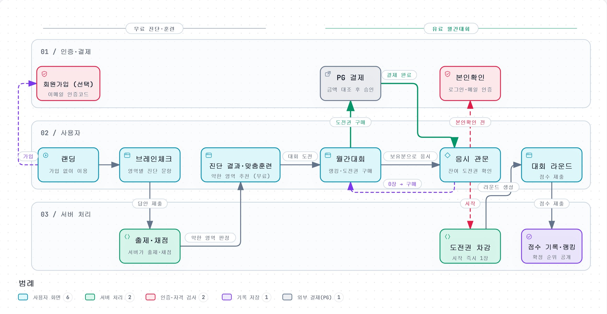
사용자 흐름도 · 누르면 크게 볼 수 있습니다
핵심 의사결정
보안 수정을 되돌렸다가, 연동 상대의 반영을 확인한 뒤 다시 적용했습니다
근거
수정을 그대로 내보내면 상대 사이트의 결제 링크가 아직 토큰을 붙이지 않아 모든 결제 페이지가 막히는 상황이었습니다. 수정 방향을 기록해 두고 상대 개발팀의 반영을 기다렸습니다.
결과
옛 방식의 접속이 0건이 된 것을 확인하고 옛 경로를 없앴고, 그동안 결제는 멈추지 않았습니다.
도전권 차감 시점을 "완료"에서 "시작"으로 바꿨습니다
근거
네트워크가 끊기면 사용자가 손해를 볼 수 있다는 단점이 있었지만, 모든 참가자가 같은 조건에서 겨루는 월간대회의 핵심 가치를 지키는 쪽을 택했습니다.
결과
다시 시작해 문제를 고르는 허점이 없어졌고, 여러 번 도전하는 것은 계속 허용했습니다.
배포를 GitHub Actions로 바꾸되 자동 배포는 넣지 않았습니다
근거
서버 파일을 전부 대조해 서버에서 직접 고친 파일이 없다는 것을 확인한 뒤 전환을 제안했습니다. 결제 사이트라 사람이 실행하고 기본값은 미리보기로 두었습니다.
결과
매번 여러 단계를 손으로 하던 배포가 한 번의 실행으로 줄고, 서버와 저장소가 늘 같은 상태가 됐습니다.
Verihum(베리흄) - 글쓰기 과정 분석 교육 SaaS (자사 서비스)
기획 · 판정 로직 설계 · 개발(초기 공동) · 배포·운영 · 2026.07 - 현재 · verihum.kr
요약
완성된 글이 아니라 작성 과정을 근거로 직접 작성·붙여넣기·보고 따라치기를 추정하는 서비스입니다. 기획과 판정 로직 설계를 맡았고, 초기 개발만 팀원과 함께 한 뒤 AI 코딩 도구로 판정·채점·이의신청·운영 기능을 추가·고도화해 2026년 9월 말부터 대학 수업 실사용에 들어갔습니다.
역할
프로젝트 인원 : 초기 개발만 팀원과 협업, 기획·고도화·운영은 직접
나의 역할 : 서비스 기획·MVP 기획서·판정 로직 설계서 작성, 기능 추가·고도화, 배포·서버 운영(백업·이상 알림)
문제
생성형 AI가 퍼지면서 완성된 글만 보고는 학생이 직접 썼는지 판단하기 어려워졌습니다. 문장을 분석하는 탐지기는 글을 고쳐 쓰면 쉽게 뚫립니다.
분석
선행연구와 기존 탐지기를 비교했습니다. 우리 조건은 연구 조건보다 불리하므로, 연구의 정확도는 목표가 아니라 넘을 수 없는 상한선이라고 판단했습니다.
기획
붙여넣기 비율, 타자 간격의 규칙성, 스스로 고친 양, 한 번에 여러 글자 입력의 네 가지 신호로 비율을 내는 규칙 기반 판정을 설계했습니다. 표본이 부족하면 "신뢰도 낮음"을 표시하게 했습니다.
실행
판정 처리, 교수 리포트(작성 과정 재생·붙여넣기 표시·따라치기 의심 구간), 교수 확정 채점, 엑셀 일괄 채점, 이의신청, 결과 공표 메일, 시험 유형을 만들었습니다. 실사용 기록을 보며 판정 규칙을 여러 차례 고쳤습니다. 판정 공식을 V4로 고친 뒤 기존 60건을 다시 판정해, 실제 답안 59건 중 45건의 과정점수가 올라가고(평균 +1.68) 판정 라벨은 하나도 바뀌지 않은 것을 확인했습니다. 시험을 과제로 잘못 올려 문제가 미리 보이는 일이 없게 유형 기본 선택을 없앴고, 작성 중인 학생이 있으면 과제·시험을 지울 수 없게 했습니다.
결과
대학 수업에서 실제 과제 작성·제출·채점에 쓰이고 있습니다. 학생·교수용 이용 매뉴얼과 관리자용 시스템 정책 문서도 함께 운영합니다. 2026년 10월 중간고사에서는 배정 59명 중 58명이 제출했고, 서버·앱 오류 없이 AI 판정 58건이 마감 2분 뒤 끝났습니다. 시험 전에는 150명 동시접속 점검으로 로그인부터 동시 제출까지 기록 누락이 없음을 확인했습니다. 랜딩 모바일 성능 점수는 78에서 94로, 첫 화면 표시는 3.9초에서 2.1초로 줄였고, 이때 만든 운영 이상 알림(보안 신호 포함)은 이후 모든 프로젝트의 기본으로 삼았습니다.
배운 점
오판이 사람에게 상처가 되는 기능은 정확도를 올리는 것보다, 판정을 참고 지표로 두고 사람이 확정하는 구조를 먼저 세우는 것이 중요하다는 것을 배웠습니다.
작성부터 이의신청까지
수업 참여참여코드로 신청, 교수가 승인
작성 기록입력·삭제·붙여넣기를 기록, 2분마다 자동저장
판정제출 뒤 서버가 작성 방식별 비율 계산
교수 확정작성 과정 재생·표시를 참고해 점수 확정
공표·이의신청공표 뒤 학생이 기간 안에 이의신청
짧은 글 타이핑이 적으면 "신뢰도 낮음"으로 표시해 표본 부족으로 낙인찍지 않음
판정 처리 중단 멈춘 작업은 다시 처리하고, 한 작업은 한 번만 처리
시험 유형 시작 전 문제 비공개, 남은 시간 표시, 재제출 차단
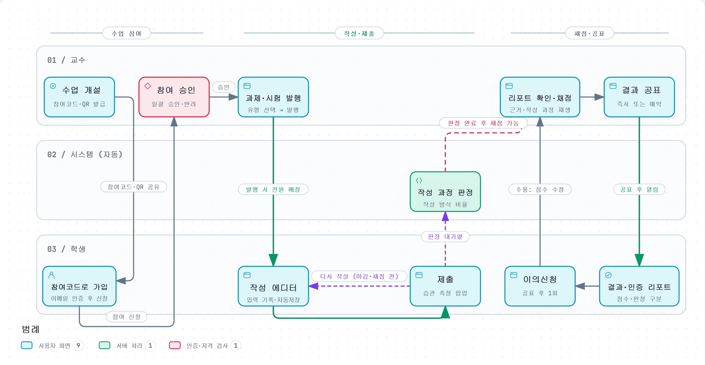
사용자 흐름도 · 누르면 크게 볼 수 있습니다
핵심 의사결정
학생에게 실시간 의심도를 보여 주지 않기로 했습니다
근거
실시간 표시는 어떤 입력이 안 걸리는지 학생에게 바로 알려 주는 셈이라 회피를 가르치게 됩니다. 교수가 사후에 확인하는 사용 방식에서는 즉시성도 필요하지 않았습니다.
결과
MVP 범위를 사후 확인형으로 고정해 학생 화면 개발과 서버 부담을 덜었습니다.
자동 판정은 참고 지표로 두고 최종 점수는 교수가 확정하게 했습니다
근거
규칙 기반 판정은 정직한 학생을 오판할 수 있습니다. 교수가 확정한 값은 나중에 판정을 개선할 정답 자료도 됩니다.
결과
교수 확정 채점과 이의신청 경로가 갖춰졌습니다.
정확도를 큰 숫자로 내세우지 않기로 했습니다
근거
시장의 탐지기는 근거 없는 정확도를 내세우는데, 교육기관에는 근거를 밝힌 낮은 숫자가 더 믿을 만하다고 판단했습니다.
결과
설계서와 대외 자료의 표기를 "연구 기준 참고 상한선"으로 통일했습니다.
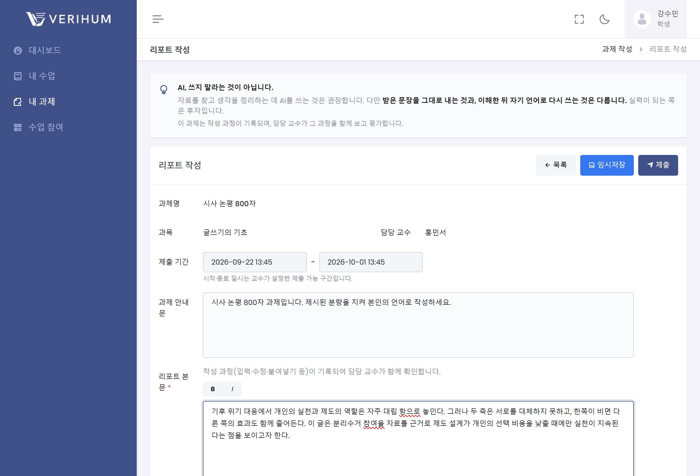
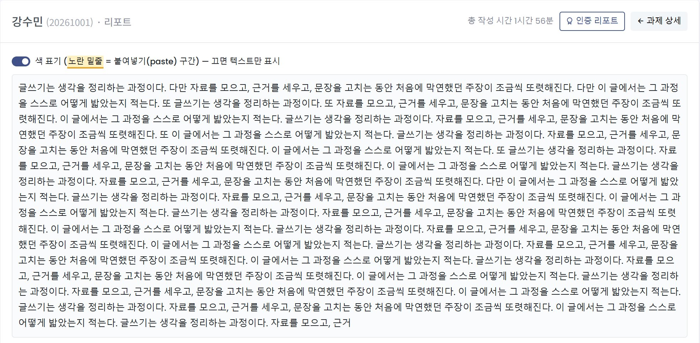
학원 통합관리시스템 (4개 지점)
계약직 기획자(디딤유) · 2023.12 - 2024.04 · 첫 단독 기획 프로젝트
요약
부원장으로 근무하며 직접 만들어 운영하던 업무 프로세스를, 이후 기획자로서 수작업을 줄이고 모든 지점이 공통 도구로 관리하는 시스템으로 설계했습니다. 4개 지점 수강생 4천여 명의 회원·입학·수업·시험·통계와 직원·홈페이지 관리, 비대면 학사 신청을 11개 모듈로 나누고 화면 단위로 요구사항을 정의했습니다. 2024년 5월 런칭해 현재도 사용 중이며, 개발·퍼블리싱·디자인은 별도 인력이 맡았습니다.
역할
프로젝트 인원 : 4인 (기획 - 본인, 이전 기획자 후임으로 투입 / 개발 - 디딤유 대표 / 퍼블리싱 / 디자인)
나의 역할 : 클라이언트 커뮤니케이션·요구사항 분석·전체 기획(화면정의서 214페이지) 단독 담당
문제
4개 지점의 관리부 직원과 교사는 지점·과정마다 회원·입학·수업 정보를 따로 관리해, 입학 신청부터 등록까지 진행 상황을 따라가기 어려웠습니다. 이전 기획은 30페이지가 채 되지 않아 이 업무를 담지 못했고, 그 자리에 후임으로 투입됐습니다.
분석
입학 신청부터 반 배정·수업·평가까지의 업무 프로세스는 제가 부원장으로 근무하며 직접 만들어 운영하던 것이었습니다. 이 실무 경험을 바탕으로 클라이언트 미팅에서 세부 요구사항을 파악해 반영했고, 수작업이 많은 부분과 공통 도구 없이 처리하던 부분을 골라냈습니다. 또 같은 시스템을 관리부 직원과 교사가 서로 다른 목적으로 쓴다는 점과 지점·조직·수업 일정이 해마다 바뀐다는 점을 설계 조건으로 정리했습니다.
기획
회원·입학·수업 운영·교사 수업·평가·통계·시스템 설정 등 11개 모듈로 IA를 나누고, 관리부와 교사의 화면을 역할에 맞게 나눴습니다. 해마다 바뀌는 조직과 수업 일정은 학년도 단위 설정으로 분리했고, 여러 종류의 학사 신청은 비대면으로 받아 같은 처리 흐름으로 관리하게 했습니다.
실행
5개월 동안 클라이언트와 요구사항을 조율하며 화면마다 화면ID·설명·상세 요구사항을 적은 화면정의서 214페이지를 작성했습니다. 분량이 가장 큰 영역은 수업 운영(시간표·반 배정·출결·각종 신청)이었고, 개발자인 대표와 긴밀하게 소통하며 기획과 기능 개발을 나란히 진행했습니다.
결과
2024년 5월 서비스가 런칭돼 4개 지점, 수강생 4천여 명의 관리 업무에 지금도 쓰이고 있습니다. 이 프로젝트를 계기로 기획자에서 PM으로 진로를 넓혔습니다.
배운 점
지점과 과정이 얽힌 서비스는 화면 하나하나보다 전체 업무 흐름을 먼저 그려야 각 화면의 요구사항이 분명해진다는 것을 배웠습니다.
학사 신청 하나가 처리되기까지
온라인 신청방문하지 않고 시스템에서 신청
지점 확인담당 지점 관리부가 신청 목록에서 확인
처리반 배정·시간표 등 수업 운영에 반영
안내안내 문자는 종류별 문구를 미리 설정해 발송
이력학생 정보에 신청·처리 이력이 남음
해마다 바뀌는 조직 지점·조직·수업 일정은 학년도 단위로 설정해, 해가 바뀌어도 화면을 다시 만들지 않게
역할별 화면 관리부 직원과 교사가 각자 필요한 화면만 보도록 권한 그룹으로 분리
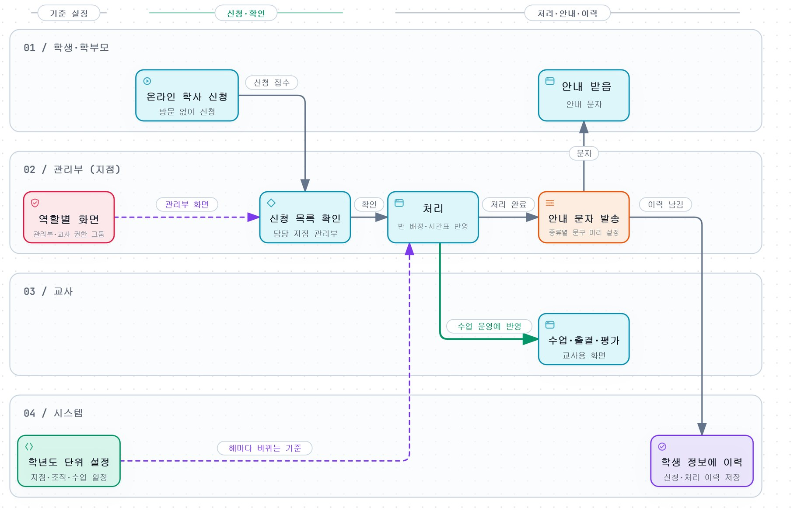
업무 흐름도 · 누르면 크게 볼 수 있습니다
핵심 의사결정
이전 기획을 고치는 대신, 실무 프로세스를 기준으로 처음부터 새로 기획했습니다
근거
이전 기획은 실제 업무 흐름을 담지 못해 부분 보완으로는 빈 곳이 계속 생길 상황이었습니다. 부원장으로 근무하며 직접 만들고 운영하던 실무 프로세스 전체를 기준으로, 수작업을 시스템으로 옮기는 방향으로 다시 설계했습니다.
결과
30페이지가 안 되던 기획이 11개 모듈, 214페이지 화면정의서가 됐습니다.
여러 종류의 학사 신청을 비대면으로 받아 같은 처리 흐름으로 묶었습니다
근거
신청 종류마다 화면과 처리 방식이 다르면 직원이 익힐 것이 늘고, 4개 지점의 현황을 한눈에 볼 수 없습니다. 그래서 신청 - 확인 - 처리 - 안내 - 이력이라는 공통 흐름을 먼저 정하고 각 신청을 그 위에 얹었습니다.
결과
학생·학부모는 방문 없이 신청하고, 직원은 신청부터 처리까지 시스템 안에서 관리하게 됐습니다.
이력
경력
2025.07 ~ ing근무
Project Manager · BN System
2025년 7월 입사, 다양한 산업의 웹서비스 구축 프로젝트에서 기획부터 PM까지 전 과정 담당 중. - 농업 지식 AI 챗봇 앱 MVP: 관리자 화면 설계·고객사 검수 대응 (2025.07 - 2025.10)
2025.03 – 2025.06근무
Digital Tutor · 테크빌교육
중·고등학교 2개교에서 1학기동안 디지털튜터로 근무.
2023.12 – 2024.04근무
Contract Planner · 디딤유
학원 통합관리시스템 - 첫 기획 담당 프로젝트, 5개월간 클라이언트 미팅부터 전체 시스템 기획까지 수행 (개발·퍼블리싱·디자인 협업).
2011.12 - 2022.07근무
교육업계 · (주)독서문화연구원 대치본원 부원장 외
성인 및 중·고등 대상 학원 교육 현장에서 약 11년간 근무. 마지막 4년은 (주)독서문화연구원 대치본원에서 근무(2018.04 - 2022.07)하고 부원장으로 퇴사.
교육 · 자격 · 수상
2023.05 – 2023.10교육
Frontend Study · 은곡직업전문학교
HTML/CSS/JS 기초와 Python 기반 빅데이터 분석·시각화를 학습하며 웹 프론트엔드 개발 과정 수료.
2023.10.06자격증
SQLD · 한국데이터산업진흥원
SQL 개발자(SQLD) 자격 취득.
2024.04 – 2024.09교육
Backend Study · 송파여성인력개발센터
Java/Spring Boot, JDBC·MyBatis, JSP/React까지 직접 구현하며 백엔드 개발 과정 수료.
2024.09.06자격증
ADsP · 한국데이터산업진흥원
데이터분석 준전문가(ADsP) 자격 취득.
2025.06 – 2025.07교육
Backend Study(LangChain LLM) · 송파여성인력개발센터
백엔드 심화 과정을 수강하던 중 BN System에 채용되어 과정 중도 수료. 이 직업훈련 경험을 담은 수기로 성평등가족부 주최 공모전에서 장관상 수상.
2026.10활동
선배 멘토링 · 송파여성인력개발센터
PM 직무를 준비하는 국비지원 개발 과정 수료생 대상 선배 멘토링 진행(수료 기관 매칭).
그 밖의 프로젝트
대표 프로젝트 외에 기획·PM·개발을 맡은 프로젝트입니다.
수출 중소기업 해외 쇼핑몰
기획·개발·결제 연동·배포 직접 수행 · 줄어든 예산에 맞춰 범위 재설계 · 토스페이먼츠 실결제 가동 중
기획 · PM · 백엔드 · 결제(PG) 연동 · 배포·유지보수 · 2026.08 - 현재
영문 홈페이지에 회원·장바구니·주문·결제(원화·해외카드)와 관리자 주문·결제·회원 관리를 직접 개발했습니다. 운영을 복제한 스테이징에서 리허설한 뒤 배포합니다.
회원단체 회지관리 시스템
수동 제작 2개 호에서 찾은 문제로 시스템 제안·채택 · 직접 구축·납품 · 126호부터 적용
PM · 기획 · AI 활용 디자인·개발 · 운영 개선 · 2026.05 - 현재
이전 업체 방식 그대로 회지 제작을 맡아 2개 호를 손으로 만든 뒤, 그 과정에서 겪은 불편과 비효율을 기준으로 시스템을 기획·설계해 고객사에 제안했고, 제안이 채택돼 직접 개발·납품했습니다.
비영리 협회 홈페이지
계약 범위 변경에도 개발 범위를 모두 마쳐 오픈 · 메인 시안 기준 나머지 화면 AI 프로토타입 · 173개 항목 검수
PM · 기획 · AI 활용 디자인·퍼블리싱 · QA · 추가 개발 · 유지보수 · 2026.03 - 현재
강좌 신청·수료증 발급·회원 등급이 있는 협회 홈페이지를 기획하고, 메인 시안을 뺀 화면을 AI로 만들어 완성했습니다. 오픈 뒤에는 게시판 댓글 기능을 추가 개발하고 운영을 맡고 있습니다.
회원단체 전자투표 2차 (임원선거·기타 투표)
기획·검수 주도(개발자·퍼블리셔 협업) · 화면 360건 회귀 비교 · 납품 전 필수 18건으로 범위 고정
기획 · 검수 · 보안 개선 · 백엔드 수정 · 2026.05 - 2026.10
임원선거용 전자투표 시스템을 기획하고, 개발 뒤 전 화면 검수와 보안 점검을 이끌었습니다. 표 저장 구조를 바꿔 개표 오류를 고치고, 표와 투표자를 잇는 직접적인 연결 고리를 없앴습니다.
개인 업무 자동화 (AI 워크플로)
기획·개발 단독 · 개인 업무 웹앱·브리핑·자동 점검 구축 · 서버에는 암호문만 저장 · 팀 버전으로 확장
기획 · 개발 · 운영 · 2026.09 - 현재
할 일·소통·이력을 한곳에 모으는 개인 업무 웹앱과 업무 브리핑, 업무일지 작성 도구를 만들었습니다. 반복된 실수는 문서 규칙에 그치지 않고 작업 직후 알려 주는 자동 점검으로 바꿨습니다.